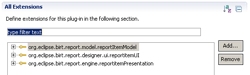
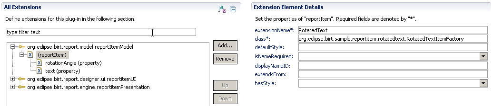
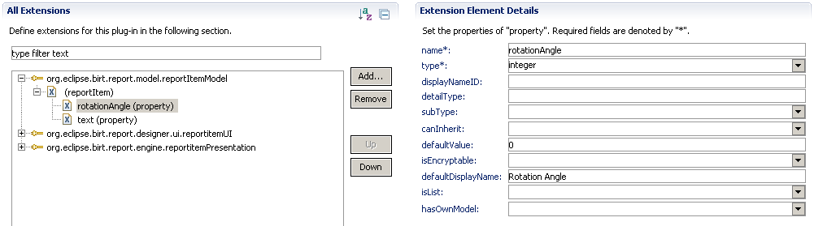
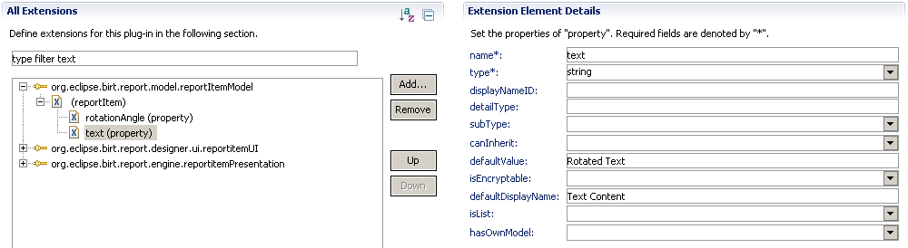
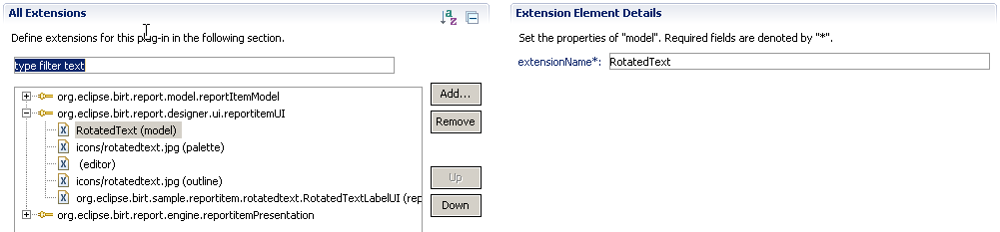
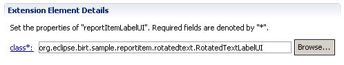
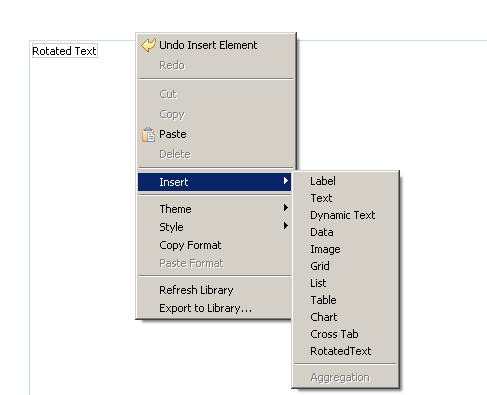
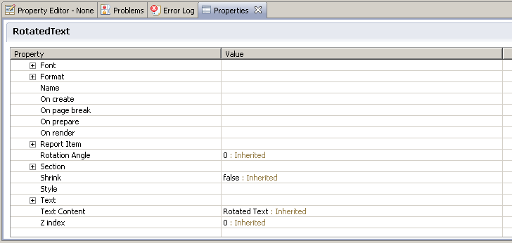

Introduction
For many people, BIRT(Business
Intelligence and Reporting Tools) may
only mean a regular reporting tool. But in fact, the real strength of
BIRT is not only its built-in reporting functionality, but also
its
extension capabilities. By extensions, user can easily extend the
functionality of BIRT, creating custom extended report items, adding custom
emitters, and even having custom editor pages. The powerfulness of extensions
enables user to create
custom reporting features that can meet very specific requirements. In
this
article, we will explorer how to leverage the BIRT extension mechanism to
extend the BIRT capabilities. The given samples will
cover most of the essential extension points that provided by BIRT report
model, engine and designer.
The Basics
BIRT already contains the basic Label and Text report items, but these items can only show horizontal text. Sometimes, user would like to show angled text, in this case, alternative solution is needed. In following sections, we are introducing how to implement a RotatedText extended report item through BIRT extensions, and how to enhance the functionality step by step by implementing more extension points.
Note: This example is a modified version based on RotatedText sample on BIRT CVS, the original code can be retrieved here.
To implement an extended report item, basically we need look at following extension points:
- org.eclipse.birt.report.model.reportItemModel
- org.eclipse.birt.report.designer.ui.reportitemUI
- org.eclipse.birt.report.engine.reportitemPresentation

These three extensions are the basics to implement an extended report item. In brief, "org.eclipse.birt.report.model.reportItemModel" provides the report model extensibility, "org.eclipse.birt.report.designer.ui.reportitemUI" provides the report designer extensibility and "org.eclipse.birt.report.engine.reportitemPresentation" provides the report engine extensibility. Now we will introduce them one by one.
1) org.eclipse.birt.report.model.reportItemModel
This extension point is provided by BIRT Report Model, normally user uses this extension point to define the extended report item model.
First we need define a new extended report item model extension as "RotatedText", this name is the identifier for the extended item, it's also the only symbol that connects between the report model and designer extensions.
Then we define the model factory class as "org.eclipse.birt.sample.reportitem.rotatedtext.RotatedTextItemFactory". This factory class will be used to create and initialize the IReportItem instance, usually this class can also implement an additional IMessages interface to provide localization support:
public class RotatedTextItemFactory extends ReportItemFactory
{
public IReportItem newReportItem( DesignElementHandle modelHanlde )
{
if ( modelHanlde instanceof ExtendedItemHandle && RotatedTextItem.EXTENSION_NAME.equals( ( (ExtendedItemHandle) modelHanlde ).getExtensionName( ) ) )
{
return new RotatedTextItem( (ExtendedItemHandle) modelHanlde );
}
return null;
}
public IMessages getMessages( )
{
// TODO implement this to support localization
return null;
}
}
There are some extra properties here that are not used by this example, we just introduce them briefly:
- defaultStyle
- specify the default style name, this will be used by BIRT to find and match the default style for this extended report item automatically.
- isNameRequired
- specify if the name is required for this extended report item.
- displayNameID
- specify the display name ID for this extended report item, the ID will be passed to IMessags interface to get the localized extended report item name.
- extendsFrom
- specify the name of the report item that this extended report item extends from, if this is not specified, the item will by default extend from "ExtendedItem".
- hasStyle
- specify if this extended report item supports styled properties, for some non-UI report items, it can be set to "false".
Now we need define two new properties for the RotatedText extended report item:
- rotationAngle

- text

We can see a lot of things in the
property setting page that we haven't used yet, normally they are for more complex property types, we
just skip them here.
Once we completed the model definition, we need give a basic IReportItem
implementation. This class is used to encapsulate the extended report
item model, providing some convenient property accessing APIs:
public class RotatedTextItem extends ReportItem
{
public static final String EXTENSION_NAME = "RotatedText"; //$NON-NLS-1$
public static final String TEXT_PROP = "text"; //$NON-NLS-1$
public static final String ROTATION_ANGLE_PROP = "rotationAngle"; //$NON-NLS-1$
private ExtendedItemHandle modelHandle;
RotatedTextItem( ExtendedItemHandle modelHandle )
{
this.modelHandle = modelHandle;
}
public String getText( )
{
return modelHandle.getStringProperty( TEXT_PROP );
}
public int getRotationAngle( )
{
return modelHandle.getIntProperty( ROTATION_ANGLE_PROP );
}
public void setText( String value ) throws SemanticException
{
modelHandle.setProperty( TEXT_PROP, value );
}
public void setRotationAngle( int value ) throws SemanticException
{
modelHandle.setProperty( ROTATION_ANGLE_PROP, value );
}
}
We can see most of the methods here are just getter/setters. For simple extended report item, this is normally already enough.
2) org.eclipse.birt.report.designer.ui.reportitemUI
This extension point is provided by BIRT Designer, user uses this
extension point to define the UI behavior for extended report
items.

First we need bind the Designer extension with Model extension, to do
this, we simply specify the extension name as "RotatedText".
Next step, we specify some settings for this extended report item:
- Palette Settings
- specify the icon to be shown in Palette view, and the palette category as well. If the category is not specified, it will use the default "Report Items" category.
- Editor Settings
- specify the report item visibility in different editor pages, and whether resizing control should be enabled.
- Outline Settings
- specify the icon to be shown in Outline view, normally this is the same as in Palette view.
The last step, specify the implementation class for UI provider:
The UI provider defines how to display and interact with the extended report item within the editor. BIRT designer support three types of basic UI providers:
- Label UI Provider
- user implements the IReportItemLabelProvider interface, it simply just requires an text content.
- Image UI Provider
- user implements the IReportItemImageProvider interface, it simply just requires an image content.
- Figure UI Provider
- user implements the IRportItemFigureProvider, This provider uses Figure interface from GEF, providing more flexibility and interactivity support.
In this example, we choose to implement the simplest Label UI Provider first, in consequent examples, we may introduce other type of UI providers.
Our Label UI Provider implementation class is "org.eclipse.birt.sample.reportitem.rotatedText.RotatedTextLabelUI", the code looks very simple:
public class RotatedTextLabelUI implements IReportItemLabelProvider
{
public String getLabel( ExtendedItemHandle handle )
{
try
{
IReportItem item = handle.getReportItem( );
if ( item instanceof RotatedTextItem )
{
return ( (RotatedTextItem) item ).getText( );
}
}
catch ( ExtendedElementException e )
{
e.printStackTrace( );
}
return null;
}
}
You can see what it does is just reading the property from model and returning a text value.
Once we completed the designer extension, we can run the desginer first and have a glance for what we already have now:
OK, the Palette view already contains the new RotatedText extended report item.
Right-click in the editor, we can see the RotatedText item is also available in the context menu.
Now try insert one RotatedText item to report, in Outline view, we can see the new RotatedText node.
Select the RotatedText item, open the Properties view, it immediately lists all the properties that belong to this extended report item. Among them, we can see "Rotation Angle" and "Text Content" as well as other inherited properties. User can edit the property value in this view.
Now designer extension is done, let's step to the Report Engine extension.
3) org.eclipse.birt.report.engine.reportitemPresentation
This extension point is provided by BIRT Report Engine, user uses
this extension point to define the presentation behavior of the
extended report item.
First we also need specify the extension name as "RotatedText" to link it
with Model extension, and specify the presentation implementation
class
as
"org.eclipse.birt.sample.reportitem.rotatedtext.RotatedTextPresentationImpl".
The presentation implementation class need implement the
IReportItemPresentation interface.
Our plan to implement the rotated text effect is to create an image
dynamically, in this image, we use SWING graphics API to render the
rotated text.
Here is the code that all we need:
public class RotatedTextPresentationImpl extends ReportItemPresentationBase
{
private RotatedTextItem textItem;
public void setModelObject( ExtendedItemHandle modelHandle )
{
try
{
textItem = (RotatedTextItem) modelHandle.getReportItem( );
}
catch ( ExtendedElementException e )
{
e.printStackTrace( );
}
}
public int getOutputType( )
{
return OUTPUT_AS_IMAGE;
}
public Object onRowSets( IRowSet[] rowSets ) throws BirtException
{
if ( textItem == null )
{
return null;
}
int angle = textItem.getRotationAngle( );
String text = textItem.getText( );
BufferedImage rotatedImage = SwingGraphicsUtil.createRotatedTextImage( text, angle, new Font( "Default", 0, 12 ) ); //$NON-NLS-1$
ByteArrayInputStream bis = null;
try
{
ImageIO.setUseCache( false );
ByteArrayOutputStream baos = new ByteArrayOutputStream( );
ImageOutputStream ios = ImageIO.createImageOutputStream( baos );
ImageIO.write( rotatedImage, "png", ios ); //$NON-NLS-1$
ios.flush( );
ios.close( );
bis = new ByteArrayInputStream( baos.toByteArray( ) );
}
catch ( IOException e )
{
e.printStackTrace( );
}
return bis;
}
}
The logic is pretty straightforward, the main part is to generate an image dynamically in the onRowSets() method. To return the image, we simply create an in-memory stream to hold the image content.
Here is the utility class that implements the key rotation rendering algorithm:
public class SwingGraphicsUtil
{
public static BufferedImage createRotatedTextImage( String text, int angle, Font ft )
{
Graphics2D g2d = null;
try
{
if ( text == null || text.trim( ).length( ) == 0 )
{
return null;
}
BufferedImage stringImage = new BufferedImage( 1, 1, BufferedImage.TYPE_INT_ARGB );
g2d = (Graphics2D) stringImage.getGraphics( );
g2d.setFont( ft );
FontMetrics fm = g2d.getFontMetrics( );
Rectangle2D bounds = fm.getStringBounds( text, g2d );
TextLayout tl = new TextLayout( text, ft, g2d.getFontRenderContext( ) );
g2d.dispose( );
g2d = null;
return createRotatedImage( tl, (int) bounds.getWidth( ), (int) bounds.getHeight( ), angle );
}
catch ( Exception e )
{
e.printStackTrace( );
if ( g2d != null )
{
g2d.dispose( );
}
}
return null;
}
private static BufferedImage createRotatedImage( Object src, int width, int height, int angle )
{
angle = angle % 360;
if ( angle < 0 )
{
angle += 360;
}
if ( angle == 0 )
{
return renderRotatedObject( src, 0, width, height, 0, 0 );
}
else if ( angle == 90 )
{
return renderRotatedObject( src, -Math.PI / 2, height, width, -width, 0 );
}
else if ( angle == 180 )
{
return renderRotatedObject( src, Math.PI, width, height, -width, -height );
}
else if ( angle == 270 )
{
return renderRotatedObject( src, Math.PI / 2, height, width, 0, -height );
}
else if ( angle > 0 && angle < 90 )
{
double angleInRadians = ( ( -angle * Math.PI ) / 180.0 );
double cosTheta = Math.abs( Math.cos( angleInRadians ) );
double sineTheta = Math.abs( Math.sin( angleInRadians ) );
int dW = (int) ( width * cosTheta + height * sineTheta );
int dH = (int) ( width * sineTheta + height * cosTheta );
return renderRotatedObject( src, angleInRadians, dW, dH, -width * sineTheta * sineTheta, width * sineTheta * cosTheta );
}
else if ( angle > 90 && angle < 180 )
{
double angleInRadians = ( ( -angle * Math.PI ) / 180.0 );
double cosTheta = Math.abs( Math.cos( angleInRadians ) );
double sineTheta = Math.abs( Math.sin( angleInRadians ) );
int dW = (int) ( width * cosTheta + height * sineTheta );
int dH = (int) ( width * sineTheta + height * cosTheta );
return renderRotatedObject( src, angleInRadians, dW, dH, -( width + height * sineTheta * cosTheta ), -height / 2 );
}
else if ( angle > 180 && angle < 270 )
{
double angleInRadians = ( ( -angle * Math.PI ) / 180.0 );
double cosTheta = Math.abs( Math.cos( angleInRadians ) );
double sineTheta = Math.abs( Math.sin( angleInRadians ) );
int dW = (int) ( width * cosTheta + height * sineTheta );
int dH = (int) ( width * sineTheta + height * cosTheta );
return renderRotatedObject( src, angleInRadians, dW, dH, -( width * cosTheta * cosTheta ), -( height + width * cosTheta * sineTheta ) );
}
else if ( angle > 270 && angle < 360 )
{
double angleInRadians = ( ( -angle * Math.PI ) / 180.0 );
double cosTheta = Math.abs( Math.cos( angleInRadians ) );
double sineTheta = Math.abs( Math.sin( angleInRadians ) );
int dW = (int) ( width * cosTheta + height * sineTheta );
int dH = (int) ( width * sineTheta + height * cosTheta );
return renderRotatedObject( src, angleInRadians, dW, dH, ( height * cosTheta * sineTheta ), -( height * sineTheta * sineTheta ) );
}
return renderRotatedObject( src, 0, width, height, 0, 0 );
}
private static BufferedImage renderRotatedObject( Object src, double angle, int width, int height, double tx, double ty )
{
BufferedImage dest = new BufferedImage( width, height, BufferedImage.TYPE_INT_ARGB );
Graphics2D g2d = (Graphics2D) dest.getGraphics( );
g2d.setColor( Color.black );
g2d.setRenderingHint( RenderingHints.KEY_TEXT_ANTIALIASING, RenderingHints.VALUE_TEXT_ANTIALIAS_ON );
g2d.setRenderingHint( RenderingHints.KEY_ANTIALIASING, RenderingHints.VALUE_ANTIALIAS_ON );
AffineTransform at = AffineTransform.getRotateInstance( angle );
at.translate( tx, ty );
g2d.setTransform( at );
if ( src instanceof TextLayout )
{
TextLayout tl = (TextLayout) src;
tl.draw( g2d, 0, tl.getAscent( ) );
}
else if ( src instanceof Image )
{
g2d.drawImage( (Image) src, 0, 0, null );
}
g2d.dispose( );
return dest;
}
}
The Result
Now all required extension points are done, let's have a test.
Create a report that contains some RotatedText items first:
Here we inserted quite a few RotatedText items with different angle settings.
Preview the report as HTML, it results like this:
Preview the report as PDF, it results like this:
Done! So far we've successfully implemented a RotatedText extended
report item for BIRT, and integrated it with Designer and Report Engine.
Summary
BIRT provides very good extension mechanism, which allows user to create custom reporting features. This article introduced how to write a custom RotatedText extended report item for BIRT.
Resources
[1] The complete source code: you can extract and import it into Eclipse workspace as a plugin project directly
[2] BIRT Official Site: http://eclipse.org/birt
[3] How to access Eclipse CVS: http://wiki.eclipse.org/CVS_Howto